Rollin'picとは？


「Rollin'pic（ローリンピック）」は、カプコンとSNKの人気キャラクターが夢の共演を果たした伝説的な対戦格闘ゲーム『CAPCOM VS. SNK 2 MILLIONAIRE FIGHTING 2001』（通称：カプエス2）の国内最大規模を誇るユーザージェット・全国大会です。
プレイヤーとしても知られる D44 Bas氏 が中心となって主催しており、長年愛され続けるカプエス2コミュニティの熱量を象徴する一大イベントとなっています。
- 発売から長期間が経過した現在でも根強い人気を誇るカプエス2において、全国各地からトッププレイヤーや熟練のファンが集結するフラグシップ大会です。
- 例年、数日間にわたる日程で開催され、個人でのガチンコトーナメント（個人戦）に加え、仲間との連携が試される3on3のチーム戦なども実施されます。
- 本戦の出場権を賭けて、事前の全国各地のゲームセンター等で予選が繰り広げられるほか、直前の当日予選枠も設けられるなど、全国の猛者に門戸が開かれています。
- 近年は埼玉県の "南浦和プレイスポットビッグワン（ビッグワン2nd）" などを主な会場として開催されることが多く、長年培われた独自のグルーヴ選択やキャラクター性能の駆け引き、数々の名勝負・ドラマが生まれています。
シード選手紹介
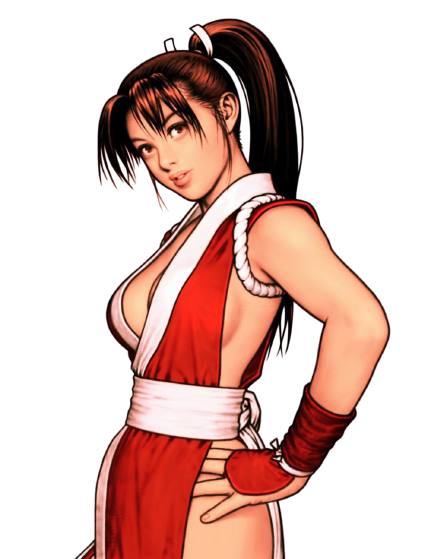
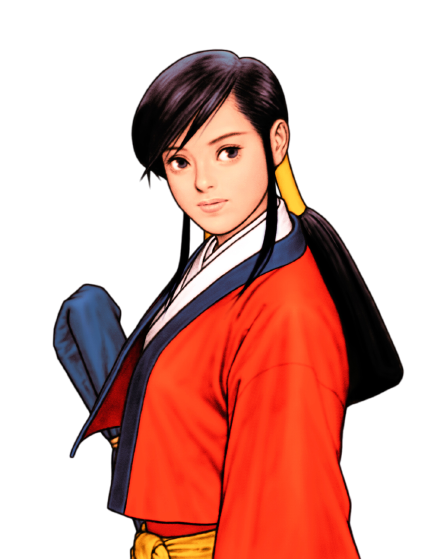
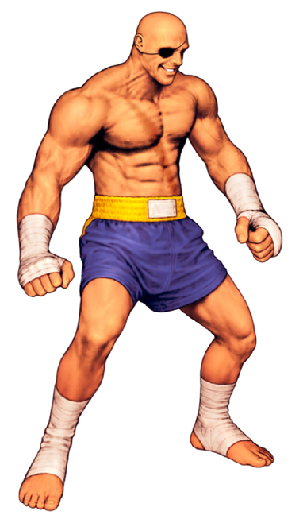

ライ
前年度個人戦覇者ライ、魔王という名の元に近年は個人戦団体戦問わず優勝し続けている現カプエス界最強のKグラー。
カプエスを稼働初期からプレイし続けた経験からくる迷いのない最速行動が最大の持ち味。
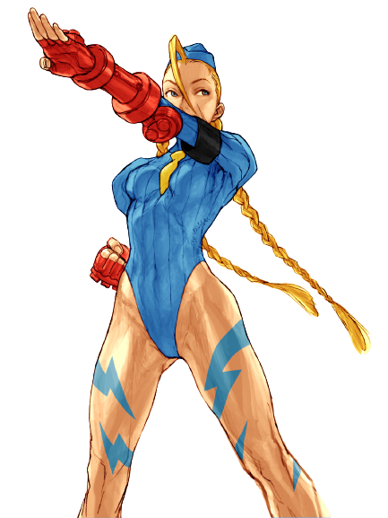
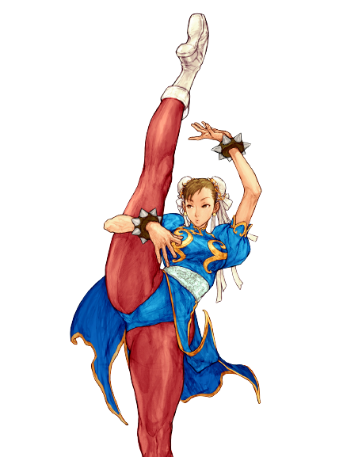


kiku
名古屋が生んだ地上戦のスペシャリスト。
グルーヴ的に苦手とされているKへの対策も穴はない。

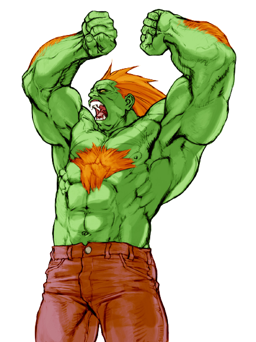
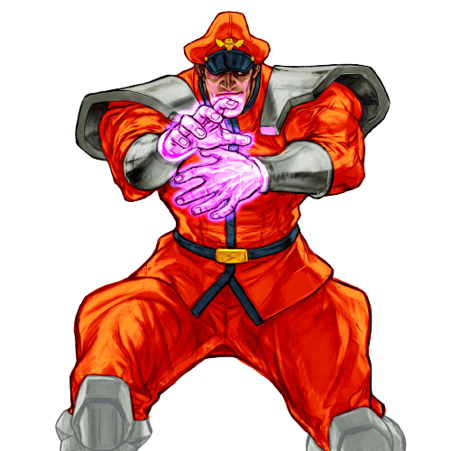

GAN
Ａ庵というキャラを完全に昇華させた大阪のプレイヤー。
大会前に名古屋に行き上記のkikuと100戦するなど気合は十分。
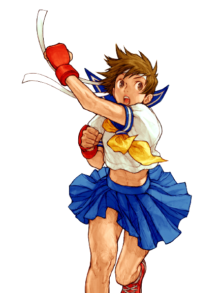
Laugh
現在関東のトップAグラーと名高いLaugh。
リスクを極限まで減らした立ち回りと高い入力精度が最大の武器。
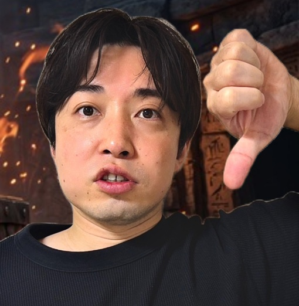
ワタリ
一発予選での北海道予選において遠征勢を全て返り討ちにし最後は同じ北海道勢との決勝戦を制しシード権を獲得。
前回大会終了後も様々なオリコンを開発し本戦に挑む。
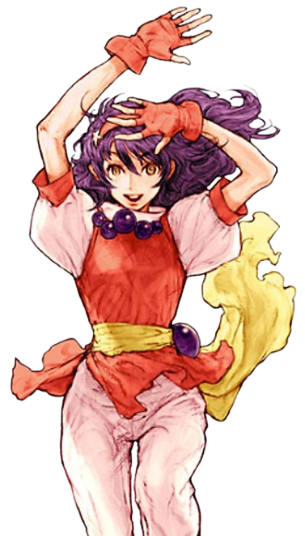
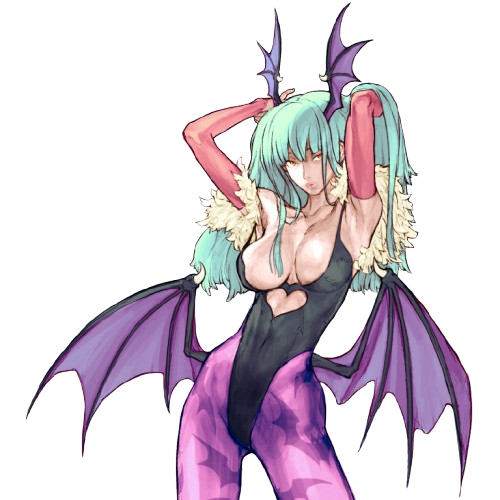

Sophitia
Ａ恭介アテナモリガンというお世辞にも強いとは言えないチーム編成で関東予選を勝ち抜いたプレイヤー。
元々のプレイヤーとしての強さに加えて使用率の低いキャラゆえ対策されにくいという部分でも注目。
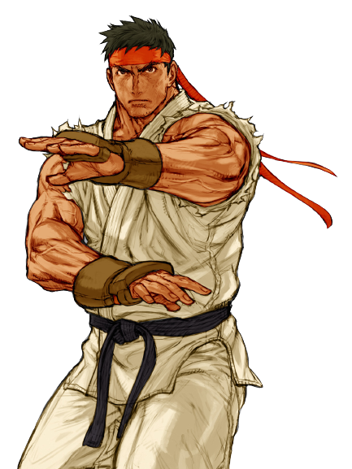
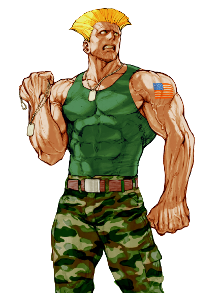
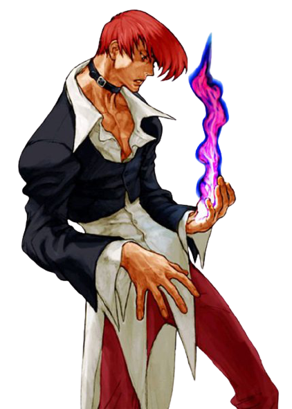
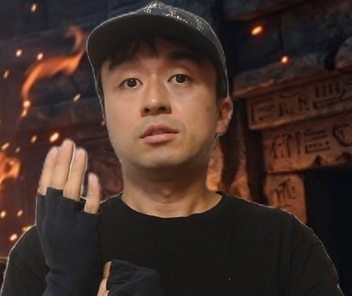
GAO
CとKの２つのグルーヴをメインキャラとして使う二刀流のプレイヤーだが今回の個人戦はCグルーヴを使用。
高いコンボ精度と対空精度、システム上カプエスにおいては重要視されにくい玉打ちの技術も超一流。
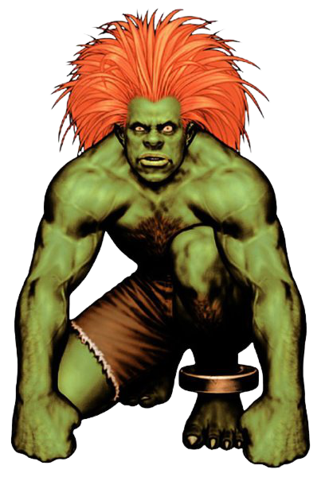
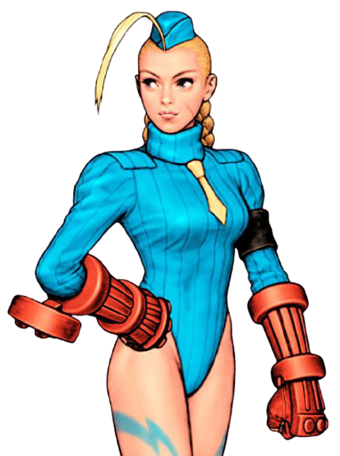

坊っちゃん
過去に二回は単独で遠征しシード権利を獲得していたが今回は地元大阪の最終予選にてシード権を獲得。
Kアレと呼ばれているKグルーヴのの最強チームを誰よりもやりこんだプレイヤー。
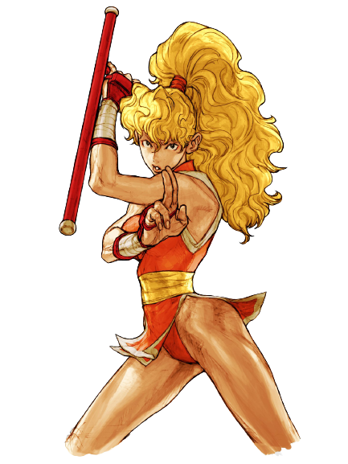

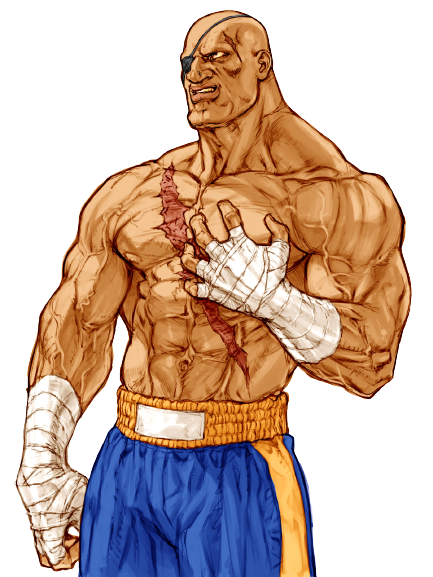

izumi
名古屋に遠征し全国的にも使用者の少ないPグルーヴを使用してシード権を獲得。
初心者でも必見！Rollin'picの見どころ
- 2001年の稼働開始から長い年月が経っているにもかかわらず、国内・海外から集まるプレイヤーたちの熟練度が非常に高く、トップメタの駆け引きが極限まで洗練されています。
- キャラクター性能の強弱だけでなく、対戦相手の心理やプレイスタイルを読み合うハイレベルな読み合いが毎試合繰り広げられます。
- カプエス2最大の醍醐味である6種類のグルーヴ（C、A、P、S、K、N）の選択が、試合の展開を大きく左右します。
- 同じキャラクターであっても、どのグルーヴを選ぶかによって立ち回りやコンボが全く異なり、プレイヤーの個性やこだわりが色濃く反映されるため、組み合わせの妙を見ているだけでも引き込まれます。
- 会場には多くのプレイヤーやファンが集結し、好プレイが飛び出した際の歓声や、大熱戦のクライマックスで見せる一体感は、ゲームセンターを拠点としたコミュニティ大会ならではの熱量に満ちています。
- 長年カプエス2のシーンを支えてきたプレイヤーたちによる、ドラマチックな名勝負や因縁の対決が数多く生まれる舞台となっています。
1on1 使用グルーヴ・キャラクター分布
| グルーヴ選択 | 使用回数 | 割合 |
|---|---|---|
| A (Aグルーヴ) | 16回 | 32.0% |
| C (Cグルーヴ) | 14回 | 28.0% |
| K (Kグルーヴ) | 13回 | 26.0% |
| 未定 (TBD等) | 3回 | 6.0% |
| N (Nグルーヴ) | 2回 | 4.0% |
| P (Pグルーヴ) | 2回 | 4.0% |
| 合計 | 50回 | 100% |
| 順位 | キャラクター名 | 使用回数 |
|---|---|---|
| 1 | ブランカ | 19回 |
| 2 | サガット | 18回 |
| 3 | ベガ | 11回 |
| 4 | 庵 | 10回 |
| 5 | キャミィ | 9回 |
| 6 | 響 | 8回 |
| 7 | 春麗 | 7回 |
| 8 | さくら | 5回 |
| 9 | ガイル / ギース / チャン / バイソン / バルログ / マキ / モリガン / リュウ / 山崎 | 各 3回 |
| 17 | ジョー / バイス / ユリ / ロック / 舞 | 各 2回 |
| 22 | アテナ / イーグル / エドモンド本田 / キム / ケン / ダルシム / ナコルル / ユン / ルガール / ロレント / 京 / 恭介 | 各 1回 |